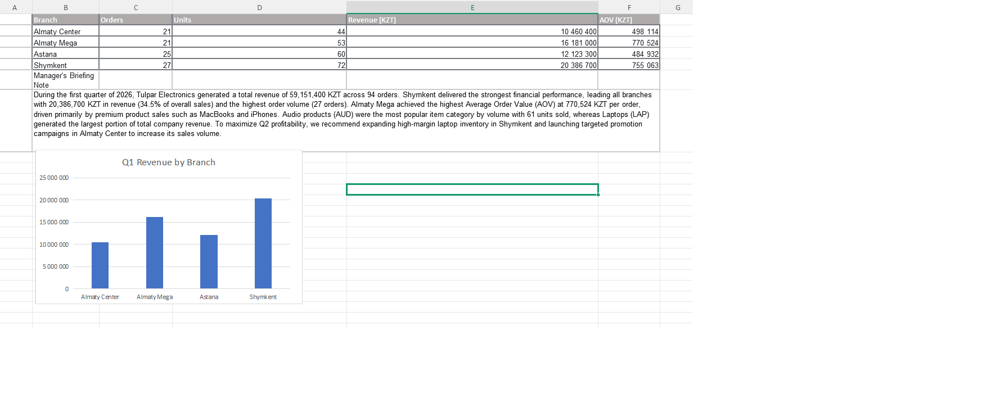

Project 1: Assignment 2 — Sales Data Audit & Summary

The task was to verify AI-generated answers on Q3 sales data and summarize key figures such as total revenue, city totals, top customers, and leading product categories. I checked the dataset in Excel using tables, lookups, and formulas/summaries rather than relying blindly on AI output. This helped confirm which numbers matched and identify discrepancies in the raw data.